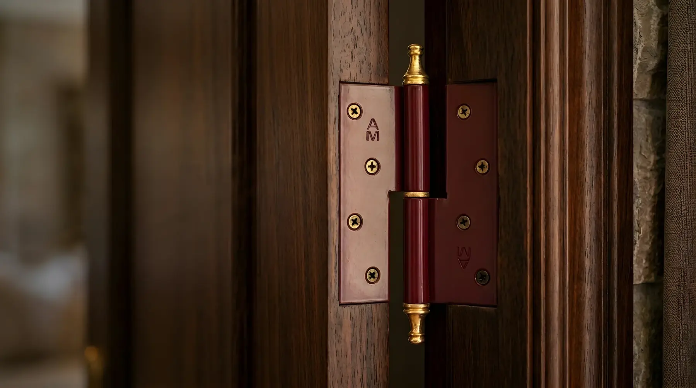
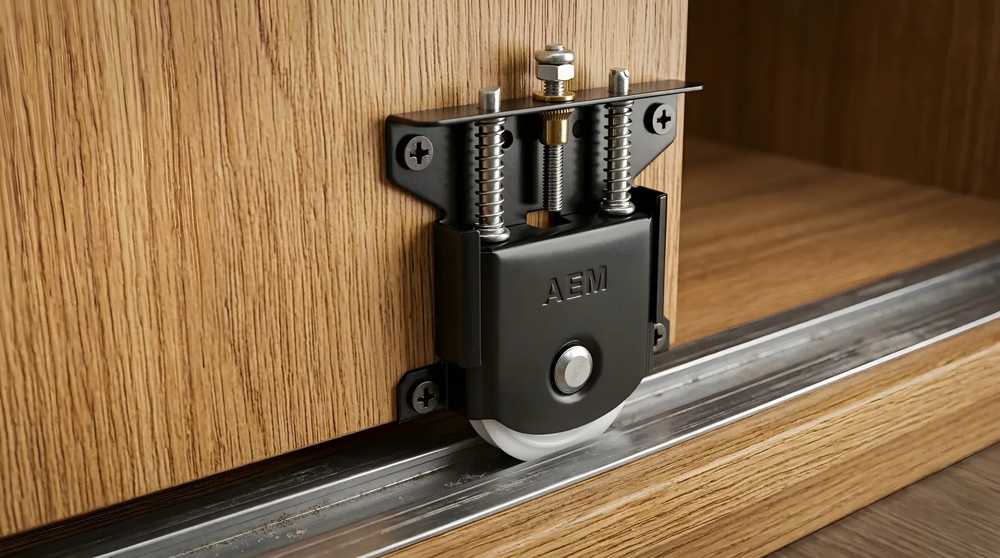
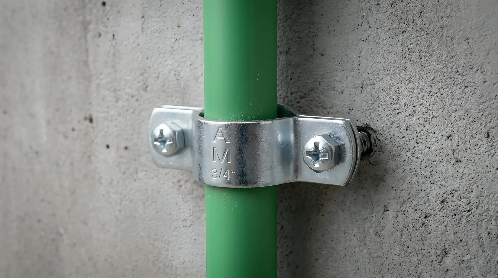
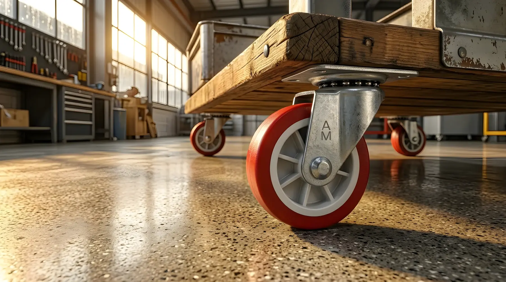
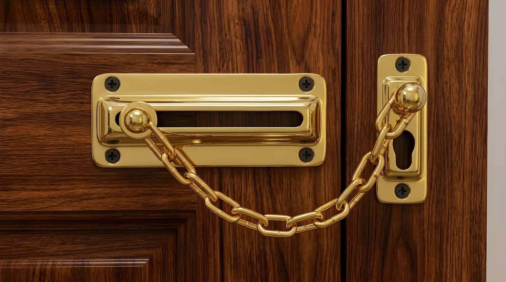

مفصلة أرو 5 بوصة مدهونة5-Inch Painted Arrow Hinge
تصميم عملي وتشطيب أنيق، مناسبة لمختلف استخدامات الأبواب والأثاث.Practical design with a neat finish, suitable for a variety of door and furniture applications.
عرض الأصنافView items
تصميم عملي وتشطيب أنيق، مناسبة لمختلف استخدامات الأبواب والأثاث.Practical design with a neat finish, suitable for a variety of door and furniture applications.
عرض الأصنافView items
تصميم عملي باللون الأسود، مناسبة للاستخدام في جرارات الدواليب.Practical design in black, suitable for sliding wardrobe doors.
عرض الأصنافView items
تصميم عملي بتشطيب فضي، مناسب لتثبيت المواسير.Practical design with a silver finish, suitable for securing pipes.
عرض الأصنافView items
عجلة عملية بإطار معدني فضي وعجلة حمراء، مناسبة لمختلف استخدامات الأثاث والمعدات.A practical caster with a silver metal bracket and red wheel, suitable for various furniture and equipment applications.
عرض الأصنافView items
تصميم عملي بتشطيب ذهبي، مناسب لتأمين الأبواب.Practical design with a gold finish, suitable for securing doors.
عرض الأصنافView itemsمفصلات أرو وبحلية وسكينة وبؤجة بمقاسات وأنواع مختلفة، من أجود أنواع الصلب.Arrow, H, knife and butt hinges in different sizes and types, made from quality steel.
عرض الأصناف ←View items →
سكاكة وشنكل شبابيك من الصلب عالي الجودة، بألوان فضي وذهبي.Window latches and hooks in high-quality steel, in silver and gold.
عرض الأصناف ←View items →
أطقم تجميع أسرّة، مفصلة ثلاجة، عقب بركبة، علاقة مطبخ وزاوية ألوميتال.Bed assembly kits, fridge hinge, joint knee set, kitchen hanger and alumital corner brace.
عرض الأصناف ←View items →
ترابيس بمقاسات 2 و2.5 و3 بوصة، وترباس بسلسلة للأبواب.Barrel bolts in 2, 2.5 and 3 inch sizes, plus a chain bolt for doors.
عرض الأصناف ←View items →
عجلات 2 و3 بوصة بفرامل أو بدون، وعجلة باب الدولاب.2 and 3 inch swivel casters with or without brake, and a wardrobe sliding wheel.
عرض الأصناف ←View items →
أفيز مواسير بمقاسات من نصف بوصة إلى 4 بوصة.Pipe clamps in sizes from half an inch to 4 inches.
عرض الأصناف ←View items →
نعرض مجموعة من المفصلات وإكسسوارات الأثاث ومستلزمات التثبيت، مع تنظيم المنتجات حسب الفئة والمقاس لتسهيل الوصول إلى الصنف المطلوب.
اتصل بنا للاستفسار عن المنتج والمقاس والتوافر.